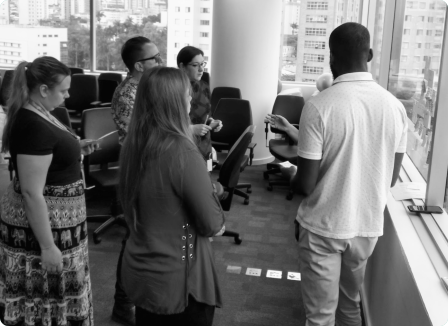
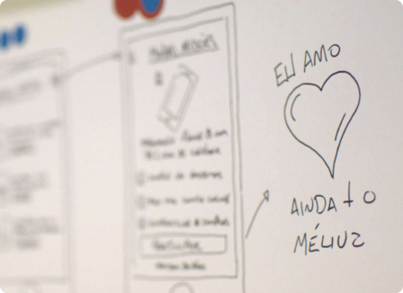

My area of focus
Interection Design
As an Interaction Designer I'm passionate about creating products collaboratively, that enable users to achieve their goals in the best possible way. To get there, I design concepts for how products are used, sketches, user testing, as well as lo-fi, hi-fi and visual designs.
UX Research
I work closely with the team to identify research questions, to plan and lead user research sessions (such as interviews, surveys, usability tests, conducting both qualitative and quantitative research), and to share insights in order to inform the product strategy.
Featured projects
Most of my recent projects are confidential, but here’s a brief of some of them. If you want to know more please contact me.
-

Building a user-centered Knowledge Management System from scratch.
- UX Research
- Interaction Design
- Visual Design
I designed a company-wide Knowledge Management System from scratch working collaboratively with different areas within the company.
I led UX research workshops and translated their findings into insightful deliverables (such as personas, user journey mapping, prototypes, usability reports), providing design recommendations to build intuitive and helpful interfaces, which helps employees to find quick and reliable information in one single place.
Company: ThoughtWorks
Key contribution: User research, Usability Test, Survey, Sketch, User Journey, Wireframe, Prototype, Visual design, CSS
-

Building a user-centered Knowledge Management System from scratch.
- UX Research
- Interaction Design
- Visual Design
I led cross-team effort to collect, analyse and synthesise data from distinct areas of the company in order to learn more about our clients motivations, thoughts and behaviours. I combined both qualitative and quantitative user research to identify hypothesis and develop a deeper understanding of our users, and synthetize knowledge in personas which were shared with multiple areas of the company in an easy and intuitive way.
Company: Méliuz
Key contribution: Research Planning, Synthesizing, Data Analysis, Data visualization
Other projects
-

Letsell Ecommerce.
- Visual Design
- Branding
I created the design of Letsell App. A tool that allowed people to buy and sell directly through Instagram.
-

Gerencianet Payments.
- Redesign
- Visual Design
Information architecture and visual design of the new website of Gerencianet Payments.
-

TripSniffer
- Visual Design
- Branding
Branding and Visual Design of the landing page to promote the Trip Sniffer project.

More about me
I am a UX Designer, graduated in Computer Engineering, specialized in Interaction Design at PUC Minas in Brazil, operates in the digital communication field for over 10 years. I have experiences working in agencies, startups, financial and technology companies.
I have abilities in Research, Insight Analysis, Interaction Design, Architecture Information and hands-on pragmatic experience in transform insights into UX deliverables such as user journeys, service blueprints, personas and translating research learnings into design and product decisions.
Currently I'm UX Designer at ThoghtWorks. I work closely with the product team to identify research questions, to plan and lead user research sessions (such as interviews, surveys, usability tests, conducting both qualitative and quantitative research, etc.), synthesise research data and to share insights in order to inform the product strategy.
I'm passionate about creating products collaboratively, that enable users to achieve their goals in the best possible way